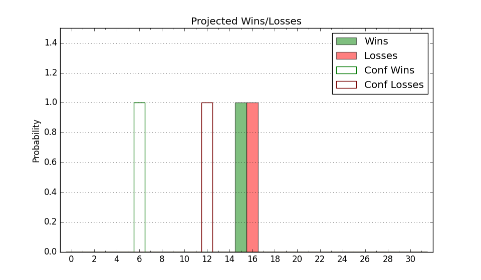

| Home | Game Probabilities | Conferences | Preseason Predictions | Odds Charts | NCAA Tournament |
| City: | Philadelphia, Pennsylvania | |
| Conference: | Atlantic 10 (10th)
| |
| Record: | 6-12 (Conf) 15-16 (Overall) | |
| Ratings: | Comp.: -4.2 (209th) Net: -4.2 (209th) Off: 103.8 (204th) Def: 108.0 (223rd) SoR: 0.0 (129th) |
| Remaining | ||||||
|---|---|---|---|---|---|---|
| Date | Opponent | Win Prob | Pred. | |||
| 3/13 | (N) St. Bonaventure (82) | 18.1% | L 66-76 | |||
| Previous | Game Score | |||||
| Date | Opponent | Win Prob | Result | Off | Def | Net |
| 11/7 | Drexel (129) | 44.6% | W 67-61 | -5.4 | 13.9 | 8.5 |
| 11/11 | Northeastern (244) | 69.4% | W 79-74 | 12.4 | -8.4 | 4.1 |
| 11/14 | Bucknell (272) | 74.7% | W 69-57 | -11.5 | 15.3 | 3.9 |
| 11/18 | Southern Indiana (327) | 86.2% | W 79-78 | -0.1 | -17.9 | -18.1 |
| 11/21 | @Duke (10) | 2.5% | L 66-95 | 1.0 | -3.7 | -2.7 |
| 11/26 | Coppin St. (360) | 94.8% | W 81-62 | 10.8 | -17.2 | -6.4 |
| 11/29 | @Temple (220) | 36.4% | L 99-106 | -6.1 | 5.9 | -0.3 |
| 12/2 | (N) Penn (197) | 47.4% | W 93-92 | 14.4 | -15.2 | -0.8 |
| 12/6 | Loyola MD (347) | 91.3% | W 62-61 | -23.8 | 4.8 | -19.0 |
| 12/9 | @Lafayette (311) | 59.4% | W 67-51 | -4.5 | 21.9 | 17.4 |
| 12/16 | @Miami FL (84) | 11.2% | L 77-84 | 17.1 | -9.9 | 7.3 |
| 12/30 | Howard (283) | 77.4% | L 66-71 | -18.1 | -1.9 | -20.0 |
| 1/3 | George Mason (90) | 30.9% | L 62-77 | -9.4 | -9.1 | -18.5 |
| 1/6 | @Fordham (172) | 27.7% | W 81-76 | 20.1 | -1.6 | 18.6 |
| 1/10 | @Massachusetts (87) | 11.3% | L 65-81 | -2.2 | -0.9 | -3.1 |
| 1/13 | VCU (73) | 27.1% | L 65-71 | -4.8 | 4.5 | -0.3 |
| 1/15 | @Saint Joseph's (95) | 12.5% | L 62-82 | -0.6 | -20.2 | -20.7 |
| 1/23 | Dayton (22) | 12.6% | L 54-66 | -13.7 | 14.6 | 0.9 |
| 1/27 | @George Washington (179) | 30.3% | W 80-70 | 8.5 | 15.0 | 23.5 |
| 1/31 | @Rhode Island (212) | 35.6% | L 69-71 | -10.8 | 9.9 | -1.0 |
| 2/3 | Saint Joseph's (95) | 32.8% | L 82-88 | 11.5 | -12.6 | -1.1 |
| 2/7 | Saint Louis (186) | 60.6% | L 84-102 | -5.8 | -24.7 | -30.6 |
| 2/10 | @Richmond (77) | 10.2% | L 65-82 | 3.7 | -6.8 | -3.1 |
| 2/13 | @Davidson (123) | 18.1% | L 56-71 | -13.9 | 6.7 | -7.3 |
| 2/17 | Massachusetts (87) | 30.3% | W 82-81 | 16.2 | -5.3 | 11.0 |
| 2/21 | St. Bonaventure (82) | 29.0% | W 72-59 | 12.0 | 17.7 | 29.8 |
| 2/25 | Rhode Island (212) | 65.3% | W 84-61 | 5.5 | 19.3 | 24.8 |
| 2/28 | @Duquesne (98) | 13.7% | L 63-75 | 5.0 | -10.5 | -5.5 |
| 3/2 | George Washington (179) | 59.7% | W 72-66 | 11.1 | -6.3 | 4.8 |
| 3/9 | @Loyola Chicago (96) | 12.8% | L 54-64 | -5.2 | 6.7 | 1.5 |
| 3/12 | (N) George Washington (179) | 44.5% | W 61-60 | -11.6 | 14.0 | 2.4 |
| Stats & Trends | |||||
|---|---|---|---|---|---|
| Current | Day | Week | Month | Season | |
| Composite | -4.2 | +0.1 | +0.0 | +2.3 | +1.3 |
| Comp Rank | 209 | -- | +2 | +36 | +9 |
| Net Efficiency | -4.2 | +0.1 | +0.0 | +2.4 | -- |
| Net Rank | 209 | -- | +2 | +37 | -- |
| Off Efficiency | 103.8 | -0.3 | -0.5 | +0.3 | -- |
| Off Rank | 204 | -4 | -9 | -2 | -- |
| Def Efficiency | 108.0 | +0.4 | +0.5 | +2.0 | -- |
| Def Rank | 223 | +5 | +11 | +56 | -- |
| SoS Rank | 129 | -1 | +5 | +17 | -- |
| Exp. Wins | 15.0 | +1.0 | +0.9 | +3.0 | +2.1 |
| Exp. Conf Wins | 6.0 | -- | -0.1 | +2.0 | -0.8 |
| Conf Champ Prob | 0.0 | -- | -- | -- | -1.3 |

| Advanced Stats | ||
|---|---|---|
| Stat | Value | Rank |
| Off Eff FG % | 0.500 | 205 |
| Off Ast Ratio | 0.153 | 101 |
| Off ORB% | 0.252 | 267 |
| Off TO Rate | 0.125 | 34 |
| Off FT Ratio | 0.256 | 343 |
| Def Eff FG % | 0.498 | 141 |
| Def Ast Ratio | 0.146 | 201 |
| Def ORB% | 0.303 | 272 |
| Def TO Rate | 0.132 | 294 |
| Def FT Ratio | 0.324 | 173 |